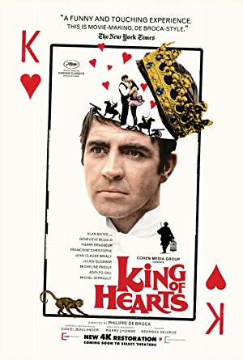
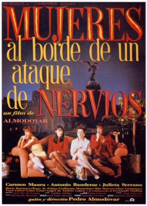

Season 50 (2015-2016)
-
 September 13, 2015Directed by F.W. Murnau; Starring George O'Brien, Janet Gaynor, Margaret Livingston, Bodil Rosing
September 13, 2015Directed by F.W. Murnau; Starring George O'Brien, Janet Gaynor, Margaret Livingston, Bodil Rosing
Sunrise: A Song of Two Humans
 (Inaugural film shown by Cinema, Inc. 1965)
(Inaugural film shown by Cinema, Inc. 1965)
USA, 1927, 94 min, B&W, Not Rated, Silent w/intertitles
Sunrise comes with a subtitle A Song of Two Humans. Interestingly, the characters are not named. At the start, we meet The Woman From the City who takes a vacation at the seashore. She has an affair with The Man who's married to The Wife with whom he is embroiled in marital problems. The Man is tormented by his infidelity but continues his tawdry affair. The Woman encourages The Man to kill The Wife. He gets cold feet and frightens The Wife who runs scared to The City. He chases her to The City where they reunite, culminating in events that settle who The Man ends up with.
Read Roger Ebert's review of Sunrise: A Song of Two Humans at Great Movies. -

October 11, 2015Directed by Philippe de Broca; Starring Pierre Brasseur, Jean-Claude Brialy, Geneviève Bujold, Adolfo Celi
King of Hearts (Le Roi de Coeur)
France/Italy, 1966, 102 min, Color, Not Rated, French w/subtitles; English
Set during WWI, the occupying Germans retreat from the town of Marville, France, but not before leaving behind a time bomb. The fleeing townspeople tell the approaching British forces about the hidden explosive. Pvt. Charles Plumpick, a poetry-loving Scotsman, is dispatched to locate the bomb. To avoid the German rear guard, Plumpick ducks into Marville's insane asylum. While trying to defuse the bomb he falls in love with one of the lovely inmates, Coquelicot. The inmates hail him as the King of Hearts before retaking the town and resuming their former lives in a decidedly loony fashion. Those willing to open themselves to a lighthearted treatment of this all-too-serious subject will find it touching and life-affirming.
-
 November 8, 2015Directed by Federico Fellini; Starring Anthony Quinn, Giulietta Masina, Richard Basehart, Aldo Silvani
November 8, 2015Directed by Federico Fellini; Starring Anthony Quinn, Giulietta Masina, Richard Basehart, Aldo Silvani
La Strada
Italy, 1954, 108 min, B&W, Not Rated, Italian w/subtitles
This is one of Fellini's best works. The film centers on two itinerant circus performers on the road. Zampano, the gypsy, a traveling strong-man, "buys" Gelsomina, a simple-minded but pure of heart young woman from her destitute mother and makes her his assistant to the act. However, his abuse of her causes great suffering. Eventually the pair join a tiny circus where she meets Il Matto, a clown and high-wire artist, who treats Gelsomina kindly. When Matto is accidentally killed she is devastated and suffers an emotional breakdown and Zampano abandons her. Years later he realizes his need for her.
-
 December 13, 2015Directed by Gabriel Axel; Starring Stéphane Audran, Bodil Kjer, Birgitte Federspiel, Jarl Kulle
December 13, 2015Directed by Gabriel Axel; Starring Stéphane Audran, Bodil Kjer, Birgitte Federspiel, Jarl Kulle
Babette's Feast (Babettes gæstebud)
Denmark, 1987, 102 min, Color, G, French and Danish w/subtitles
Two aging sisters, the leaders of a small Danish sect, have devoted their lives to religion, never venturing from their town of birth. Babette, a cook from Paris has been hired to work for the sisters. Babette invites the sisters and a few other townsfolk to share in a feast to celebrate their beloved, late pastor, and ends up performing an amazing act of grace and selflessness. Babette is a maestro. The kitchen is her orchestra. The sisters and the church members agree to eat the food, but not to enjoy or praise it. And then the miracle occurs, when these stern old puritans are transformed by the baba aurhum and the champagne (which is mistaken for lemonade).
-
 January 10, 2016Directed by Bob Rafelson; Starring Jack Nicholson, Karen Black, Billy Green Bush, Fannie Flagg
January 10, 2016Directed by Bob Rafelson; Starring Jack Nicholson, Karen Black, Billy Green Bush, Fannie Flagg
Five Easy Pieces
USA, 1970, 98 min, Color, R
This is a moody, incisive, thoughtful character study of an alienated, misfit drifter and non-committal drop-out. It's a road trip about a man who had turned his back on his well-to-do upbringing and his musical talent, leading him into a period of self imposed exile, discontent, and emotional emptiness. In a major turning point in the film, this misbehaving red-neck returns to his estranged family's home in Puget Sound for a final reconciling visit. There he finds love with the sophisticated, musical protegé and fiancée of his brother. However, he quickly returns to his discontent and is back on the road again with his dim-witted girlfriend.
Read Roger Ebert's review of Five Easy Pieces at Great Movies. -
 February 14, 2016Directed by Mark Sandrich; Starring Fred Astaire, Ginger Rogers, Edward Everett Horton, Erik Rhodes
February 14, 2016Directed by Mark Sandrich; Starring Fred Astaire, Ginger Rogers, Edward Everett Horton, Erik Rhodes
Top Hat
USA, 1935, 101 min, B&W, Not Rated
While the plot is somewhat thin, the comic mix-ups, great songs, and marvelous dance numbers more than make up for it. Astaire plays Jerry Travers, a song-and-dance man brought to London by a big-time impresario, Horace (Edward Everett Horton), to star in one of his shows. Jerry meets Dale Tremont (Rogers), a young fashion model, on his first night in town and instantly falls in love with her. Trouble develops when Dale mistakenly assumes that Jerry is Horace, a married man. As Jerry is doing his best to pursue Dale, Dale is doing her best to avoid a guy she thinks is a cad. This mistaken identity gambit provides a relaxed, unpretentious mood where the stars and the music and the dancing are all that matter.
Read Roger Ebert's review of Top Hat at Great Movies. -

March 13, 2016Directed by Pedro Almodóvar; Starring Carmen Maura, Antonio Banderas, Julieta Serrano, María Barranco
Women on the Verge of a Nervous Breakdown
Spain, 1988, 88 min, Color, R, Spanish w/subtitles
This is a funny, energetic, and sexy comedy by a filmmaker who intuitively understands women. In this picture, the women are a mix of strength and vulnerability, of passion and neurosis. Pepa is an actress who learns that her longtime married lover Ivan is breaking up with her. The problem is, she's pregnant and her failed attempts to contact Ivan don't help her state of mind. Complexity grows with the arrival of her hysterical friend Candela who may have caused an international incident by sleeping with a renowned terrorist. In the meantime, Ivan's ex-wife is seeking revenge on Pepa. There is also a cab driver who provides a drug store on wheels, a burning bed, and a pitcher of gazpacho laced with barbiturates. This is a zany comedy with a touch of sex appeal.
-
 April 10, 2016Directed by Ingmar Bergman; Starring Gunnar Björnstrand, Bengt Ekerot, Nils Poppe, Max von Sydow
April 10, 2016Directed by Ingmar Bergman; Starring Gunnar Björnstrand, Bengt Ekerot, Nils Poppe, Max von Sydow
The Seventh Seal
Sweden, 1957, 96 min, B&W, Not Rated, Swedish w/subtitles
The film is an exploration of life, death, and the existence of God. Set in medieval times, it follows a depressed knight called Antonius Block (von Sydow) and his squire who return from the Crusades to find the land ravaged by the Black Death. After Death shows up to claim Block, Block challenges Death to a game of chess to play for his fate, so he might have time to come to terms with the world. The game takes place at various intervals during the knight's journey home, during which he encounters different characters, always with the threat of doom lurking in the shadows.
Read Roger Ebert's review of The Seventh Seal at Great Movies. -
 May 8, 2016Directed by Stanley Kubrick; Starring Peter Sellers, George C. Scott, Sterling Hayden, Keenan Wynn
May 8, 2016Directed by Stanley Kubrick; Starring Peter Sellers, George C. Scott, Sterling Hayden, Keenan Wynn
Dr. Strangelove
(Audience choice selection)
USA/UK, 1964, 95 min, B&W, PG
Commanding a wing of the Strategic Air Command, a looney general orders B-52 bombers to attack the Soviet Union. When a military attaché tries to stop him, the general defends his act based on the Commie plot to "taint our water and deplete our precious bodily fluids". He refuses to reveal the code which can recall the bombers. The President learns that the Russians have a doomsday machine set to launch at the US if they're bombed. While this dark comedy of errors has a serious theme, Kubrick manages to inject wicked humor into it, including lots of sexual innuendos.
Read Roger Ebert's review of Dr. Strangelove at Great Movies. -
 June 12, 2016Directed by Robert Mulligan; Starring Gregory Peck, John Megna, Frank Overton, Rosemary Murphy
June 12, 2016Directed by Robert Mulligan; Starring Gregory Peck, John Megna, Frank Overton, Rosemary Murphy
To Kill a Mockingbird
USA, 1962, 129 min, B&W, Not Rated
This film nails the essence of childhood, a recreation of the fears, attitudes and preoccupations of kids. Essentially the film is just a string of events that share the underlying theme of prejudice. The children's irrational fear about Boo Radley, whom they've never seen, and the townsfolk's racial intolerance are separate events, but they are about the same thing. Scout, the daughter of Atticus (Gregory Peck), is the movie's narrator and that's perfect because the story works well from a child's perspective. The film doesn't take an easy road. It confronts tough issues along the way and doesn't flinch from unpleasant outcomes.
-
 July 10, 2016Directed by Akira Kurosawa; Starring Toshirô Mifune, Machiko Kyô, Masayuki Mori, Takashi Shimura
July 10, 2016Directed by Akira Kurosawa; Starring Toshirô Mifune, Machiko Kyô, Masayuki Mori, Takashi Shimura
Rashomon
Japan, 1950, 88 min, B&W, Not Rated, Japanese w/subtitles
This tells the story of the rape of a woman and the murder of a man, presented entirely in flashbacks from the perspectives of four narrators. At the Rashomon gate at Kyoto, several people who witnessed the incident take shelter and discuss the crime. A woodcutter claims to have stumbled upon the scene first. A priest recalls seeing a man and a woman traveling through the woods. A bandit confesses to raping the woman and killing the man. A woman adds more confusion by confessing to the murder. Rashomon isn't about determining a chronology of the event, nor about culpability or innocence. It focuses on how perspective distorts reality and hides the truth.
Read Roger Ebert's review of Rashomon at Great Movies. -
 August 14, 2016Directed by Billy Wilder; Starring Marilyn Monroe, Tony Curtis, Jack Lemmon, George Raft
August 14, 2016Directed by Billy Wilder; Starring Marilyn Monroe, Tony Curtis, Jack Lemmon, George Raft
Some Like It Hot
USA, 1959, 121 min, Color, Not Rated
Set in Prohibition-era Chicago,the film stars Tony Curtis and Jack Lemmon as Joe and Jerry, two jazz musicians who encounter perpetual economic troubles. They land a gig at a speakeasy but lose it when the cops raid the joint. After that, they witness the killing of the informant who ratted on the crime boss "Spats" Colombo (George Raft), so they have to go on the lam. They don women's garb, transforming themselves into "Josephine" and "Daphne" to join an all-girl band for a gig in Florida. Inevitably the crooks catch up with them but not before they run into other crazy and funny complications.
Read Roger Ebert's review of Some Like It Hot at Great Movies.